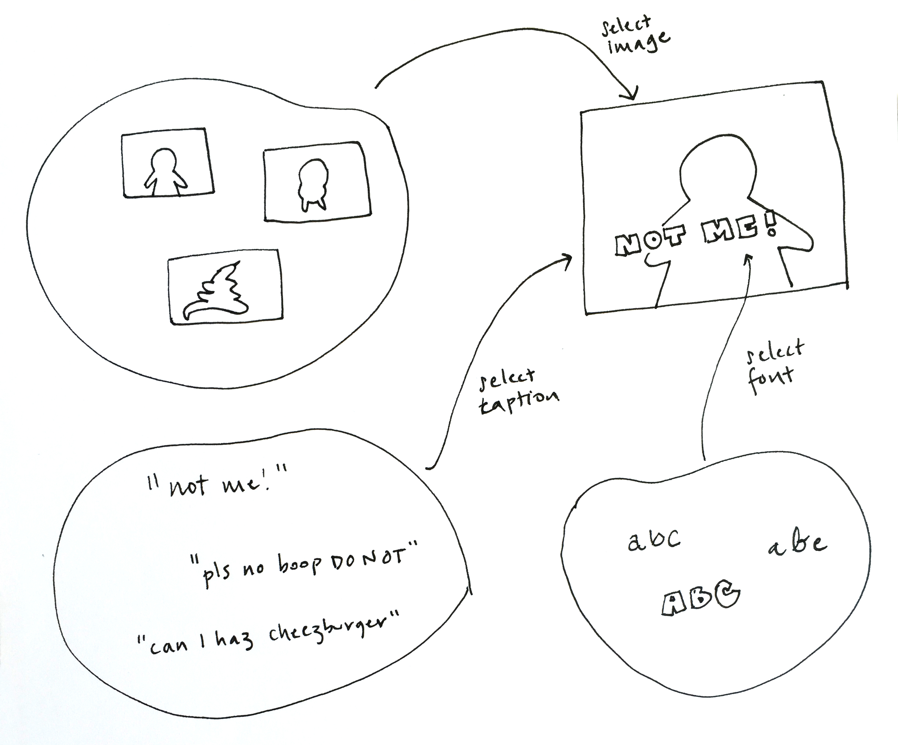
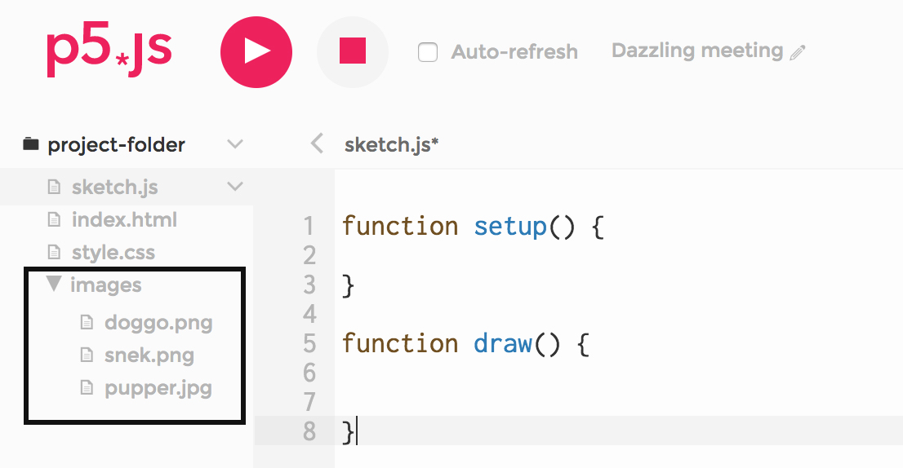
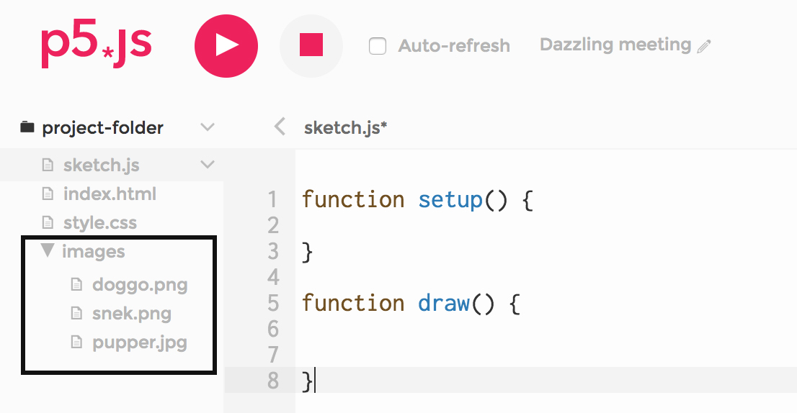
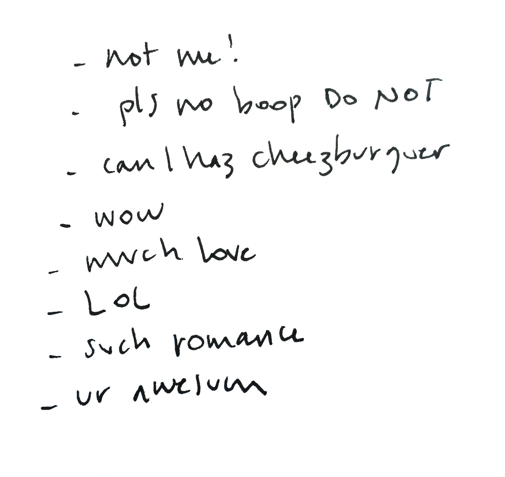
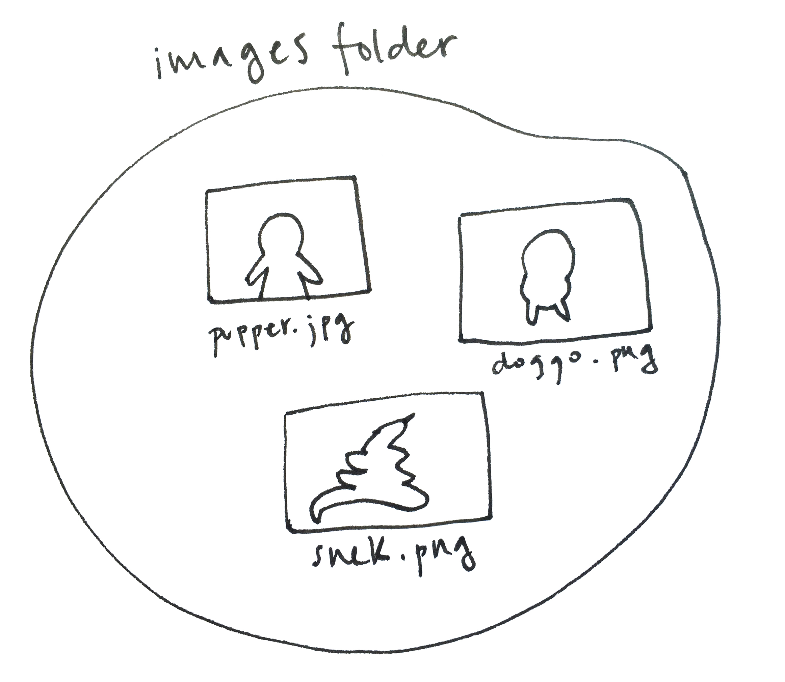
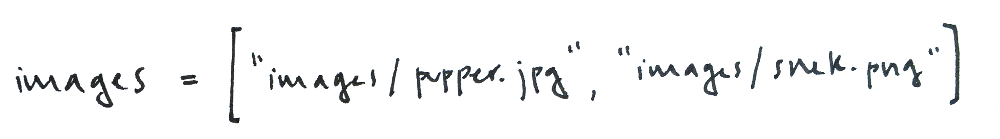
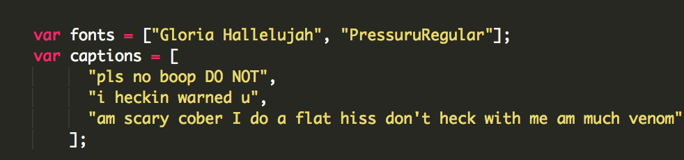

To see the complete code and running sketch click here.
Step by Step Guide: Random Meme Generator, Level 1
Description
First, let's take a look at some memes. Memes often combine an image that people are familiar with with captions written in a bold font, sometimes in bright colors.
In this example project we will write a program that selects an image, a caption, and a font and combines them to create a (potential) meme. Because the program will pick these elements at random, the results might be surprising.

Each time the program runs, a new meme will be created –– can you choose a set of images and captions so that your sketch generates good memes?
Learning Activities Reference
Steps Outline
Before coding:
- Gather a collection of images we like
- Write some captions that might work for the images
- Pick a handful of meme-like fonts for our text
- Store image file paths in an array. Select a random image. Draw it.
- Store font names and captions in arrays. Pick a random font, and a random caption. Draw the caption using the selected font
Step by Step
1) Gather images
Pick or create four or five images: find them online, or take your own photos. What kind of images will you include? Will they all be cats? Perhaps every image comes from the same movie? Or perhaps they are all already popular meme backgrounds?
Once you have your images, put them all in your sketch folder, inside a folder called images (or any name you prefer). For step by step instructions see LA 3.2.
 

2) Write caption texts
Write down five or six captions that you think would work well with the images you chose. You will write these into your code later.
3) Choose a few fonts
Go to Google Fonts or to the Open Font library and pick four or five favorites. Include them in your index.html file (for step-by-step instructions, you can review LA 3.3)
Next, write your code. Here is one way to do it:
4) Select an image at random and draw it
First, we create an array variable that holds the names of our image files.
 Next we pick a random position in the images array, and load that file into a variable called chosenImage

Because we want to make sure that the chosen image is fully downloaded from the server before we try to draw it (see LA 3.1), we put this code in our preload() function. Here is our code so far:
Let's look closer into the line where we pick our random image:
images.lengthholds the number of items held by the images array (in this case, 2)random(0, images.length)picks a number between 0 and the length of the images array ––in this case, 2. (see LA 1.2, step 2)floor()takes that number, and rounds it down: 0.3 becomes 0; 1.9 becomes 1.
Last, in our draw()function, we use the image function to display chosenImage:
5) Select a caption and font at random, and display the text
Next, let's pick our caption and a font. First, we create an array with all possible font names, and another that holds all the captions we wrote:
In the same way that we picked our image, we now pick a font and a caption, and store them in our chosenFont and chosenCaption variables. We can do this in setup():

Finally, we use textFont() to set the font to the one we picked, and text() to draw our caption.
You can see the complete, running example here. Make sure to refresh the page several times to see different memes be generated.